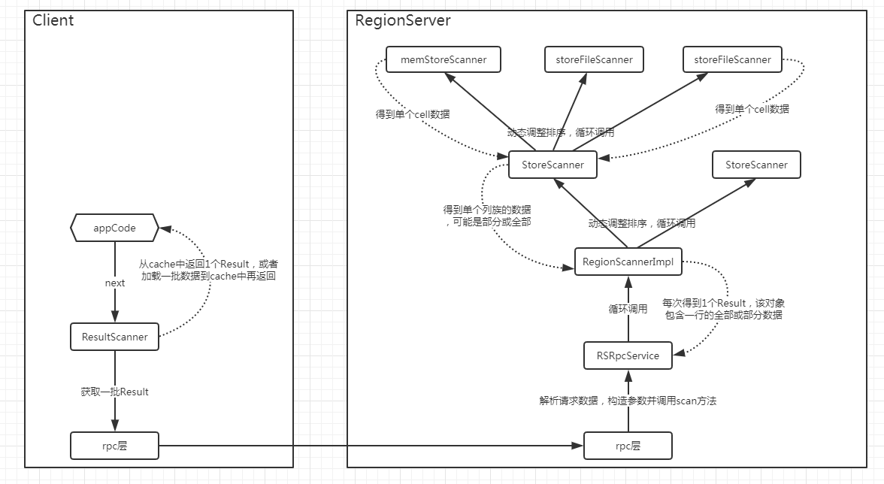
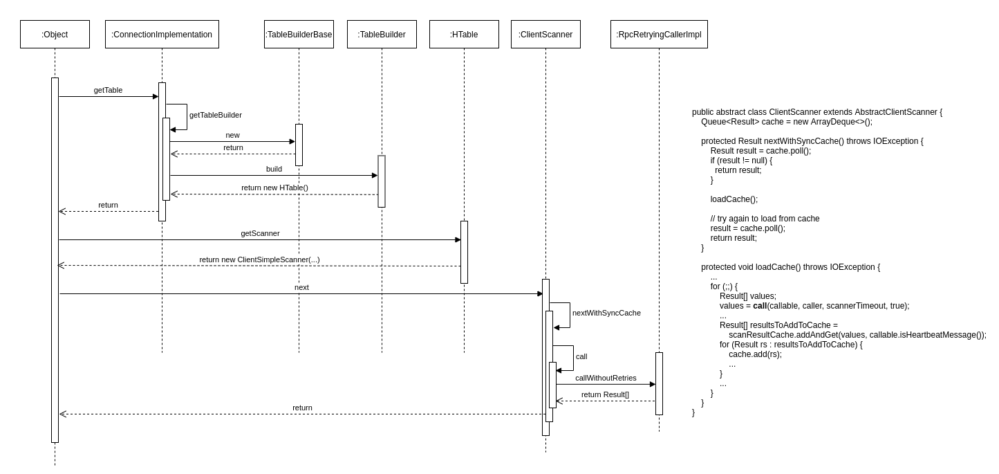
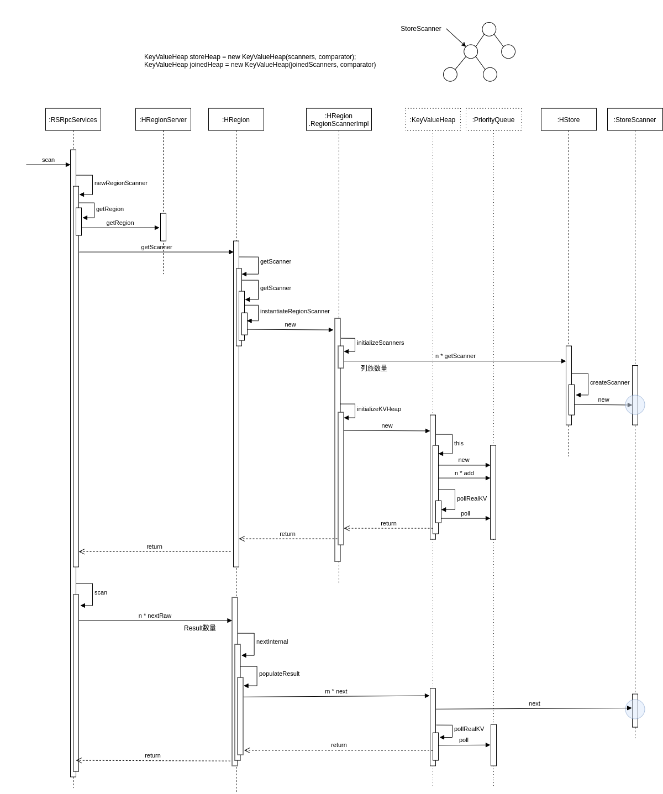
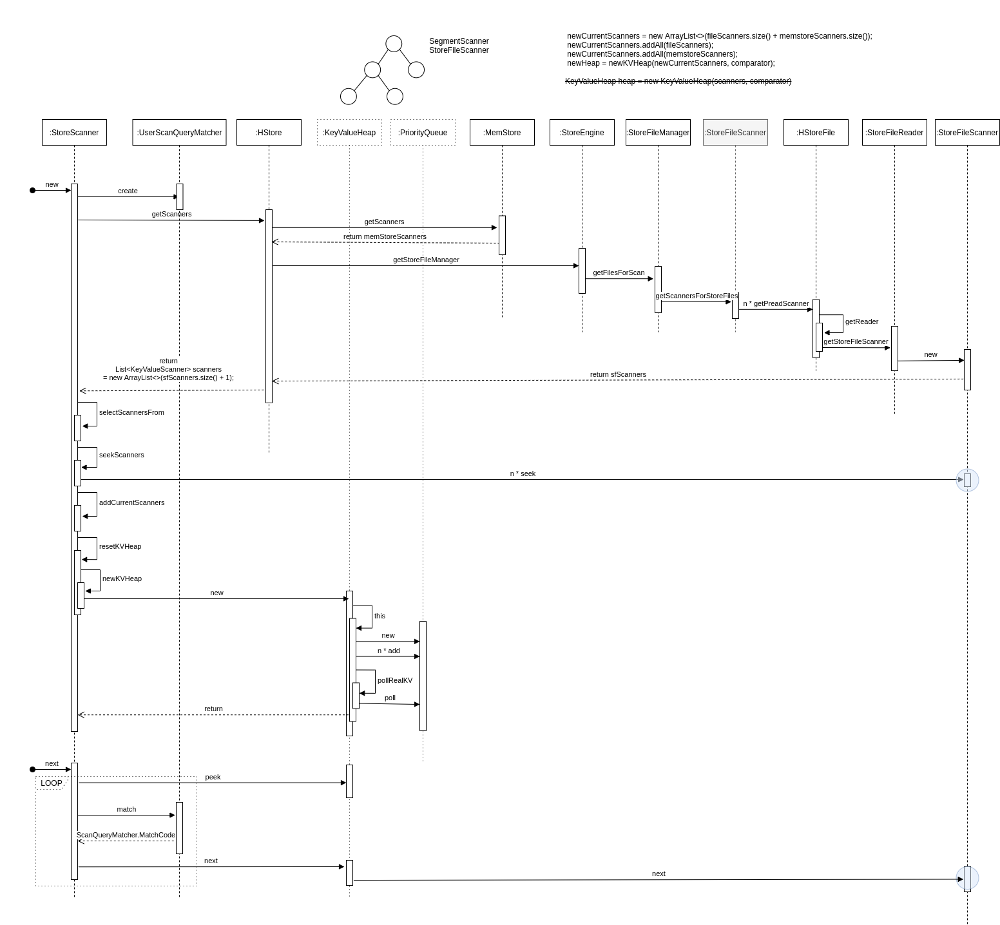
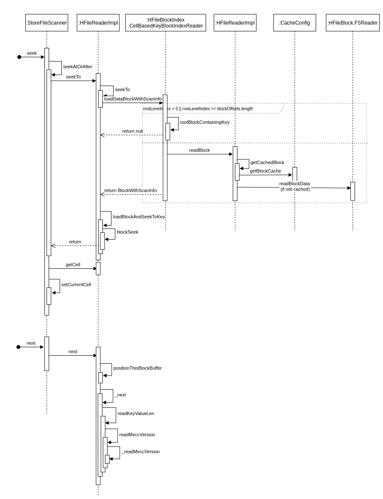

Ch16-HBase 之 Scan
April 27, 2021
HBase Scan
1. Scan 涉及到的模块说明 #
1.1 Scan 操作的 RPC 消息结构 #
message Scan {
repeated Column column = 1;
repeated NameBytesPair attribute = 2;
optional bytes start_row = 3;
optional bytes stop_row = 4;
optional Filter filter = 5;
optional TimeRange time_range = 6;
optional uint32 max_versions = 7 [default = 1];
optional bool cache_blocks = 8 [default = true];
optional uint32 batch_size = 9;
optional uint64 max_result_size = 10;
optional uint32 store_limit = 11;
optional uint32 store_offset = 12;
optional bool load_column_families_on_demand = 13;
optional bool small = 14 [deprecated = true];
optional bool reversed = 15 [default = false];
optional Consistency consistency = 16 [default = STRONG];
optional uint32 caching = 17;
optional bool allow_partial_results = 18;
repeated ColumnFamilyTimeRange cf_time_range = 19;
optional uint64 mvcc_read_point = 20 [default = 0];
optional bool include_start_row = 21 [default = true];
optional bool include_stop_row = 22 [default = false];
enum ReadType {
DEFAULT = 0;
STREAM = 1;
PREAD = 2;
}
optional ReadType readType = 23 [default = DEFAULT];
optional bool need_cursor_result = 24 [default = false];
}
2. Scan 操作的流程介绍 #

scan 过程总体上是分层处理的，与存储上的组织方式一致，脉络比较清晰；
具体来说，就是region -> store -> hfile/memstore，分别都有对应的 scanner 实现进行数据读取；
scan 请求本身设置的条件，以及 server 和 table 层面的一些参数限制，会根据需要分布在不同层次的 scanner 中进行处理；
2.1 HBase Client 的流程 #

- 客户端首先会根据配置文件中 zookeeper 地址连接 zookeeper，并读取
/<hbase-rootdir>/meta-region-server节点信息，该节点信息存储 HBase 元数据（hbase:meta）表所在的 RegionServer 地址以及访问端口等信息。用户可以通过 zookeeper 命令 (get /<hbase-rootdir>/meta-region-server) 查看该节点信息。 - 根据 hbase:meta 所在 RegionServer 的访问信息，客户端会将该元数据表加载到本地并进行缓存。然后在表中确定待检索 rowkey 所在的 RegionServer 信息。
- 根据数据所在 RegionServer 的访问信息，客户端会向该 RegionServer 发送真正的数据读取请求。
2.2 HBase RegionServer 的流程 #
2.2.1 RegionScanner #

- 创建指定的各个列族对应的 storeScanner，如果未指定则是全部列族；
- storeScanner 创建过程中，会根据 startrow 参数，seek 到对应 cell；
- 将这些 storeScanner 放入一个 heap 中，heap 为优先级队列，比较器的 compare 方法中比较的是 KeyValueScanner 所 peek 到的 cell 大小；
- 全部放入到 heap（因为 heap 是小根堆，所以一定有序），poll 方法得到最小的 storeScanner，并将其赋值给 current
- 然后调用 current 的 next 方法，获取一行的全部 cell，获取完成后 seek 到下一行；
- 再将 current 放入到 heap 中，形成新的顺序；
- 再不断重复 poll，add 方法，直到新的行大于或等于 r3。
2.2.2 StoreScanner #

- StoreScanner 的数据驱动方式与 RegionScanner 类似，也是使用 heap 和 current 去进行控制；
- 除了数据获取之外，该类比较重要的 1 个部分是数据的检查，相关逻辑封装在 ScanQueryMatcher 中；
- ScanQueryMatcher 中主要包含 2 个组件：DeleteTracker 和 ColumnTracker，前者负责处理 delete 逻辑，后者负责检查当前 cell 的 column、version 及 value 等是否符合要求；
- 另外，在 getScanners 的过程中会根据 keyRange、timeRange、bloomBlock 等对 storeFile 进行过滤，以减少数据的读取；
2.2.3 StoreFileScanner #

- storeFileScanner 是真正涉及到 hfile 数据读取的地方，会根据 rowKey，基于内存中 indexBlock 的数据定位到具体的 dataBlock 位置，以 block 为单位进行读取；
- 读取后的 block 数据在内存中以 ByteBuffer 的形式存在，而 blockSeek 方法会将这个 ByteBuffer 的 position 推动到合适位置的过程；
- 接下来，会读取一个 cell 的数据作为返回，使上层的 storeScanner 能够据此对各个 storeFileScanner 进行排序；
- 值得一提的是，实际实现中，还存在 lazySeek 的优化，大致原理是根据 hfile 中存储的最小 time，返回一个假的 cell，如果该 cell 都不能排在前面，那就不需要关心真实的 cell 是什么了，等到该 cell 能够排在最前面的时候，再进行 realSeek，这个机制对于各个 hfile 按时间存在明显分界并且主要读取近期数据的场景，可以有效减少实际的数据读取量；
注意：
很多博客说
StoreFileScanner和MemStoreScanner，实际上自 HBase2.0.0 开始HBASE-17655，MemStoreScanner和SnapshotScanner均被移除了。目前实际意义上的MemStoreScanner是由DefaultMemStore和CompositeImmutableSegment共同实现的。